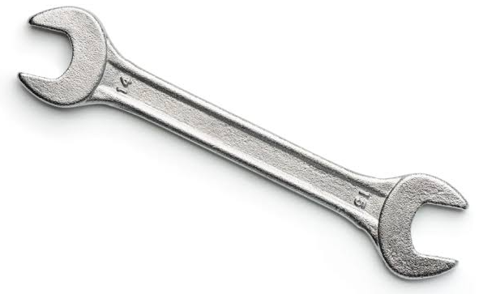
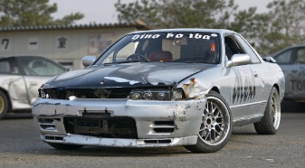
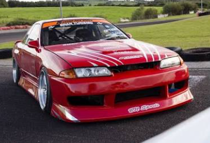
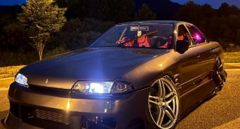

WELCOME TO THE GARAGE
AZN TINGZ GARAGE
Hey, I'm James, an Air Force veteran who enjoys cars, drifting, and learning new things. Welcome to my garage page—let's go shred some tires!
See the cars & drifting video →
Skyline Gallery



